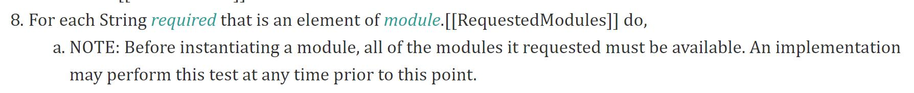
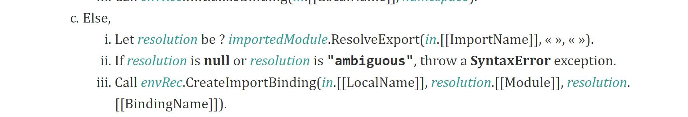

前端 DCE 策略之 — Tree Shaking
“Tree Shaking” 是 JavaScript 中一种常用的 DCE(Dead Code Elimination) 手段。它通过依赖于 ES2015/ES6 的模块系统来静态分析出源码依赖结构中的无用代码，然后便可以在打包时大大压缩源代码的体积，同时尽最大程度上的只保留用到的业务功能。
Tree Shaking 的存在完全是基于 ES6 的模块机制，由于在 ES6 的 模块机制中，import 和 export 语句是完全静态化的（代码运行之前就能够静态地把依赖关系明确的指定），因此可以在非运行时便对源代码进行可靠的静态分析来剔除无用代码。具体基于的可靠规则如下：
- 两个关键字只能作为模块顶层的语句出现，不能出现在函数或者其他的块语句里面；
import的模块名只能是字符串常量，不能使用变量；

- 不管
import的语句的出现位置在哪里，模块在初始化的所有的import都必须已经导入完成；

import绑定的变量是不可变的，类似于const；
